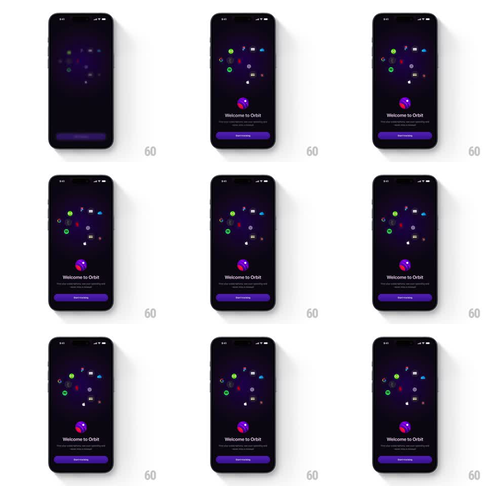

Media
Frame-by-frame

Rebuild this animation 1:1: Orbit's onboarding welcome - a ring of colorful subscription icons orbits continuously in the upper half while the Welcome card springs into view below.

Rebuild this animation 1:1: Orbit's onboarding welcome - a ring of colorful subscription icons orbits continuously in the upper half while the Welcome card springs into view below. ## Integration Integration: stack-agnostic spec - springs given as stiffness/damping, timed motions as duration + curve; map every value to your framework and animation library of choice. ## Scene Orbit onboarding, dark purple-black: an elliptical ring of brand icons (Google G, Spotify green, Netflix red, iCloud blue, grey and white glyphs) orbiting the upper half. Lower half: the purple Orbit planet logo, "Welcome to Orbit", the explainer line, and a purple "Start tracking" button. ## Motion spec Pattern: continuous brand-icon orbit above a spring-revealed welcome card. - The icon ring orbits continuously and indefinitely (one revolution per ~30s, constant speed); glyphs stay upright and dim/shrink slightly at the back of the ellipse. - Icons themselves twinkle in on load: each pops at its orbit slot (scale 0 -> 1, spring ~400/20, staggered 60ms around the ring) before the orbit starts. - At ~500ms the lower content springs up: the Orbit logo first (scale 0.6 -> 1, spring ~350/18 with a visible overshoot), then "Welcome to Orbit" and the explainer fade-slide up (20px, 300ms, 80ms apart), then the "Start tracking" button (same treatment, 100ms later). - The button idles with a slow glow pulse (shadow opacity 0.4 -> 0.7 -> 0.4, 2.5s). - The orbit keeps running behind everything - the card reveal never interrupts it. ## Calibration - Icon colors are the real brand colors on the dark field - no recoloring, no badges. - The ring never collides with the headline: keep a clear gap between the lowest icon and the logo. ## Reduced motion Icons fade in at fixed positions; orbit runs at 1/4 speed or stops; the card elements fade without springs. ## Don't miss - The stagger order is logo -> headline -> explainer -> button - never simultaneous. - The orbit is perfectly smooth: constant angular velocity, no easing in the loop.